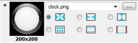
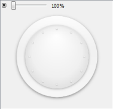
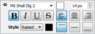
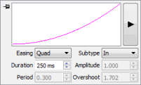
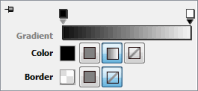

Using Qt Quick Toolbars
When you select a QML type in the code and a toolbar is available, a light bulb icon appears:  . Select the icon to open the toolbar.
. Select the icon to open the toolbar.
To open toolbars immediately when you select a QML type, select Tools > Options > Qt Quick > QML/JS Editing > Always show Qt Quick Toolbar.
Drag the toolbar to pin it to another location. Select to unpin the toolbar and move it to its default location. To pin toolbars by default, select Pin Quick Toolbar.
Previewing Images
The Qt Quick Toolbar for images allows you to edit the properties of Border Image and Image items. You can scale and tile the images, replace them with other images, preview them, and change the image margins.

To preview an image, double-click it on the toolbar. In the preview dialog, you can zoom the image. Drag the image margins to change them.

Formatting Text
The Qt Quick Toolbar for text allows you to edit the properties of Text items. You can change the font family and size as well as text formatting, style, alignment, and color.
If a property is assigned an expression instead of a value, you cannot use the toolbar to edit it. The button for editing the property is disabled.

By default, font size is specified as pixels. To use points, instead, change px to pt in the size field.
Previewing Animation
The Qt Quick Toolbar for animation allows you to edit the properties of PropertyAnimation items and the items that inherit it. You can change the easing curve type and duration. For some curves, you can also specify amplitude, period, and overshoot values.

Select the play button to preview your changes.
Editing Rectangles
The Qt Quick Toolbar for rectangles allows you to edit the properties of Rectangle items. You can change the fill and border colors and add gradients.

To add gradient stop points, click above the gradient bar. To remove stop points, drag them upwards.